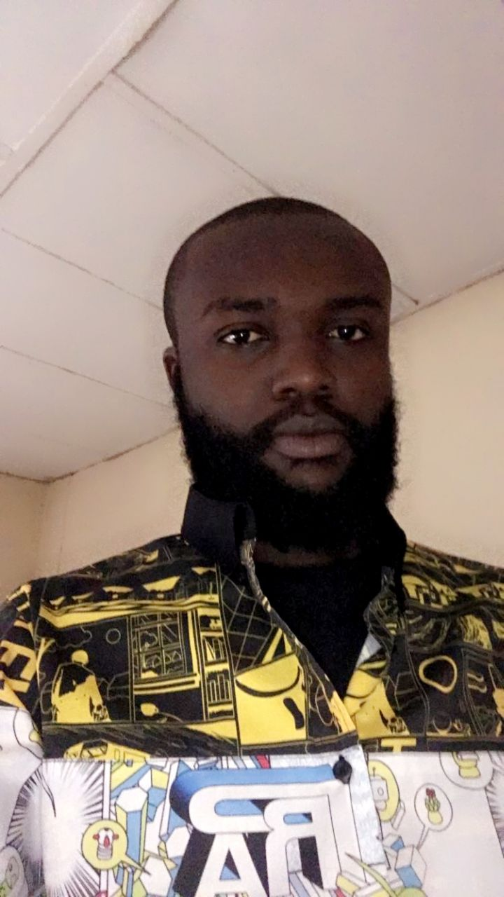

A 100 Level Cybersecurity student at MIVA Open University who enjoys learning about technology and protecting computer systems from cyber threats.
Learn More
Welcome to my academic portfolio website. This website was created as part of my COS 106 Introduction to Web Technologies practical project. Here you can learn more about me, view some of my projects, manage academic tasks using my planner, and contact me.
My name is Chukwuemeka Iheomamere, a 100 Level student in the Department of Cybersecurity at MIVA Open University. I am passionate about technology and interested in learning how to protect computers, networks, and information from cyber attacks. I enjoy improving my knowledge every day through practice and research. In my free time, I enjoy hiking and listening to music. My goal is to become a Security Operations Center (SOC) Manager and contribute to keeping organizations secure from cyber threats.
| Name | Chukwuemeka Iheomamere |
|---|---|
| Department | Cybersecurity |
| Level | 100 Level |
| University | MIVA Open University |